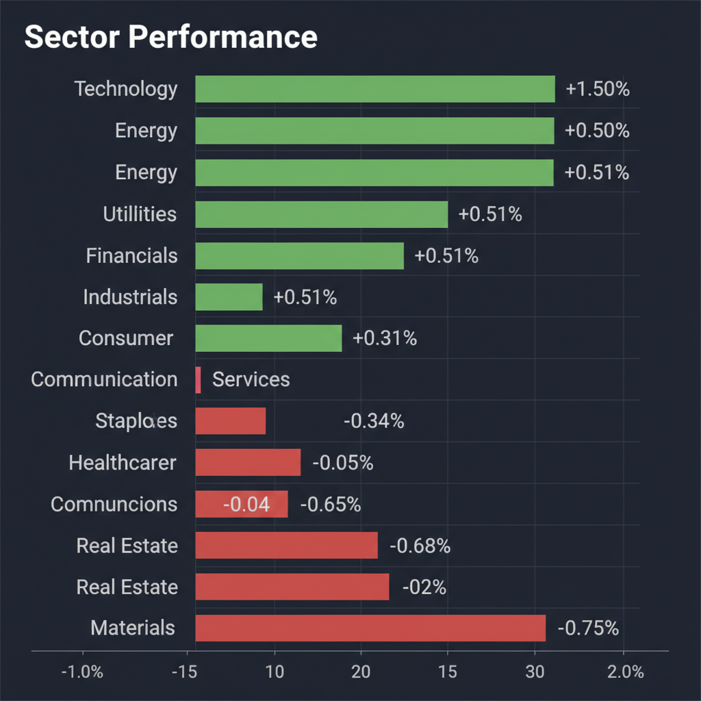
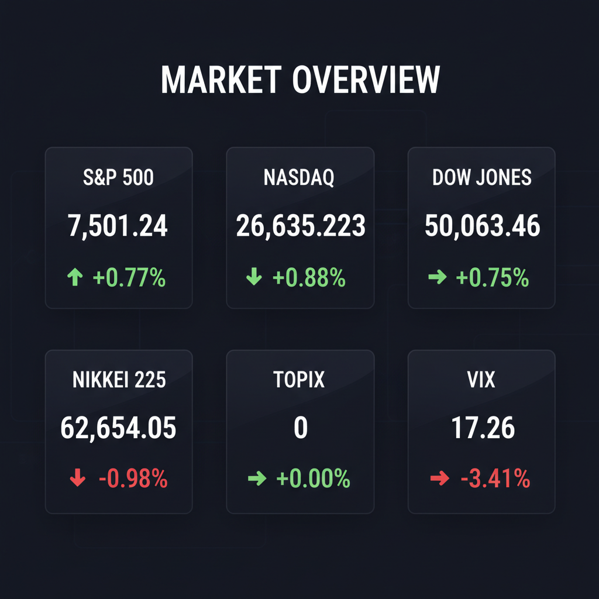

Daily Investment Report - 2026-05-15
Generated: 2026/5/15 7:32:49


本日の投資チームミーティングにおける各専門エージェントの分析を統合し、投資家の皆様が即座にアクションを取れるようまとめた最終投資レポートをお届けします。
1. エグゼクティブサマリー
- AI・テクノロジー需要による局地的な株価高騰が続く一方で、スタグフレーション懸念（40%の確率）やエネルギー高騰といった深刻なマクロリスクが水面下で進行しています。
- チーム内では「中小型のビジネスモデル転換株を狙う積極派」と「流動性枯渇を警戒し現金比率を推奨する防衛派」で意見が分かれており、市場は極めて不確実性の高い分岐点にあります。
- 本日の結論として、成長力の高いニッチな中小型株の選別投資を行いながら、エネルギーセクターへの資金分散やVIXを活用したヘッジを行う「攻めと守りのバーベル戦略」を推奨します。
2. 注目銘柄リスト
市場の盲点となっている、独自の成長カタリストを持つ中小型株を中心に選定しています。
強気（買い推奨）
- Data I/O（DAIO） [マイクロ〜小型株]: ハードウェア売り切り型から「高付加価値SaaS」への戦略的ピボットとM&Aを発表しており、収益性の大幅改善によるテンバガー（10倍株）級の再評価が期待できます。
- ブーツ・バーン・ホールディングス（BOOT） [中型株]: ウェスタンウェアというニッチ市場で強力な価格転嫁力を持っており、インフレ・スタグフレーション下でも高い利益率を維持できる質の高い企業です。
- メイコー（6787） [約1,700億円]: AIサーバーや車載向けプリント基板の恩恵を直接受ける一方で、PERが10倍台前半と割安に放置されている理想的なGARP（割安成長株）銘柄です。
- ピクセルワークス（PXLW） [超小型株]: 決算発表とともにエッジAIのビジュアル処理への戦略的転換を発表しており、巨大企業がカバーしきれないニッチ領域で爆発的なシェア拡大が見込めます。
中立（様子見）
- フクビ（7871） [約200億〜300億円]: 増収増益で財務も強固ですが、地政学リスクにより次期ガイダンスを未定としています。バリュートラップに警戒しつつ、市場のパニック売りで極端に割安になった際の下値を待つべきです。
- ファンデリー（3137） [数十億円規模]: 健康食ニッチ市場でのビジネスモデル確立が確認できれば大きな跳躍が期待できますが、現時点ではマクロショック時の流動性リスクを考慮し、打診買いのタイミングを探る段階です。
- スターバックス（SBUX） [大型株]: アナリストの格上げがありましたが、コスト上昇の逆風下におけるターンアラウンドの「実行力」と、チャートの明確な底打ち完了を確認するまでは静観が妥当です。
弱気（警戒）
- JX金属（5016） [大型〜中型株]: 巨額のCB（転換社債）発行による株式の希薄化懸念から急落しており、テクニカル的にも「落ちるナイフ」の状態にあるため、現時点でのエントリーは極めて危険です。
- ボーイング（BA） [大型株]: 200機の大型受注という特大の好材料にもかかわらず株価が下落しており、構造的な財務問題と強い上値抵抗線に抑えられている「戻り売り」の典型シグナルを発しています。
- デア・バイオサイエンス（DARE） [超小型株]: 新製品発表の好材料はありますが、赤字の超小型バイオ株は資金調達（希薄化）リスクと信用収縮時の倒産リスクが高すぎるため、投資対象から除外すべきです。
3. セクター推奨ランキング
- 中東の地政学リスク（イラン紛争）とスタグフレーション懸念に対する「最良のインフレヘッジ」として機能し、価格転嫁力に優れているため最も強気です。
- AI社会実装に向けた設備投資はマクロ景気に左右されにくい強力なテーマですが、すでにバリュエーションが高騰しているため、厳格な利益確定ルールの設定が前提となります。
- 金利の高止まりによる利ザヤ改善に加え、暗号資産規制（Clarity Act）の進展により、次世代金融サービスや予測市場への新たな投機資金の流入が期待できます。
- 金利の「より高く、より長く（Higher for Longer）」が資金調達コストを直撃し、需要後退のダメージを最も受けやすい脆弱なセクターであるため、アンダーウェイト（保有縮小）を推奨します。
4. 今週の注目イベント
- 日程未定（来週予定）：1億ドル規模のアートオークション開催（イラン戦争下における中東富裕層の購買意欲や、代替資産への投機マネーの動向を測る指標として注目）
- 日程未定：米中会談（地政学リスク、および通商・関税リスクの方向性を左右する重要イベント）
- 随時：FRB人事およびFOMC関係者の発言（Miran理事辞任を受けたFRB内のパワーバランスの変化と、インフレ再燃に対する金利見通しの確認）
5. リスク要因
- スタグフレーションの現実化と金利ショック：エネルギー高騰によってインフレが再燃し、FRBが利下げを行えない（最悪の場合は再利上げに踏み切る）ことで、株式市場全体のPERが急激に縮小するリスク。
- AI・ハイテク株への極端な集中と流動性崩壊：ごく一部のテクノロジー株や予測市場などの投機的資産に資金が集中しており、成長期待がわずかでも剥落した瞬間にパニック売りが市場全体へ波及するリスク。
- 第3次オイルショックのテールリスク：中東情勢を市場が「限定的」と過小評価（油断）していますが、原油供給網が物理的な打撃を受けた場合、世界経済が深刻なコストプッシュ・インフレに陥るリスク。
- 中小型株の資金調達難（希薄化の連鎖）：信用収縮が発生した場合、赤字の中小型株やバイオ株が資金繰りに行き詰まり、株主価値を大きく毀損する不利な増資や倒産に追い込まれるリスク。
6. アクションアイテム
- ハイテク株の利益確定とストップロスの徹底：急騰したテクノロジー株（CiscoやBroadcomなど）の既存ポジションは一部利益確定を行い、残りのポジションには20日移動平均線などの直近サポートラインに厳格な逆指値（ストップロス）を設定してください。
- 中小型「事業転換」銘柄への打診買い：Data I/Oのような、自社でSaaSモデルへの転換という強力なカタリストを持ち、マクロの逆風を跳ね返すポテンシャルのある中小型株へ、ポートフォリオの5%未満の範囲で資金を投じてください。
- 現金比率の引き上げと防衛セクターへのシフト：スタグフレーションに備え、ポートフォリオの現金比率を推奨水準（最大40%程度）まで引き上げ、エネルギー（XLE）などのインフレ耐性セクターへの配分を厚くしてください。
- VIXを活用したテールリスク・ヘッジの実行：VIX指数が17台と異常な「市場の油断」を示している今こそ、安価に放置されているVIXのコールオプションや主要指数のプットオプションをポートフォリオの2〜3%の範囲で購入し、ブラックスワン（暴落）イベントへの保険をかけてください。
- 「落ちるナイフ」の完全静観：JX金属などの急落銘柄や、好材料に反応せず下落しているボーイングには絶対に手を出さず、テクニカル面で明確な底打ちパターン（ダブルボトム等）が形成されるまで完全に様子見としてください。